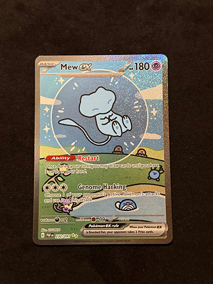

This image of a box is interesting simply because you have no idea what it is. It’s filled with what looks like clothes, which triggers a lot of questions: what clothes? How did they get there? Why are they there? How long have they been there for? The lack of context makes the collection seem disjointed, which requires the audience to fill in the gaps.
It’s part of my collection of Obsessions; specifically the ones that keep me up at night. The deeper meaning behind the box—thinking I can fix things—actually made me rethink my entire topic. Before, my pictures were lighthearted, from green tea to a good sandwich. Now, I think I want a more abstract base, but might throw one original topic in there for comedic effect.
I have plans to replace all the images, especially since the box feels closed off and not visually expressive. So far, I want to represent my obsessions with physical output, progress, aesthetics, and owning things. These will be photos of a notebook, a bathroom mirror, a pile of clothes, and a monster truck respectively. Even in writing, the relationship between the object and explanation are so separate that you’ll have to read the whole description.
Starting on Every Picture (pt.1)
Partner Analysis: Eric Le

Eric Le, 2026
This is one of Eric’s favorite pokemon cards; in fact, out of his top 5, this is number one because of the cute art style. I agree that the strong, thick line weight is appealing. Especially compared to his other cards (which all had different art styles, very cool), the centered composition and flat colors stood out. Mew’s expression is calm, as if just being born, making me more attached to the pokemon as a creature. Along with the sparkly texture, all these elements give the picture a graphic groundedness.
The image is pretty straightforward, giving me all the stats and information up-front. The one mysterious aspect could be the story behind the card, but there’s nothing left up to visual interpretation.
We talked about standardizing the lighting angle to make all the pokecards consistent in their shine. However, if you wanted to push visual thinking, I would maybe take a different approach on which cards to pick. One option could be the rattiest cards; then you can explain which stain is what and how it got there.
This was an awesome warm-up exercise. I’m not sure if it’s a topic that’s worth doing a deep-dive analysis in—like we would often do in a Design class—but we need more activities to get the brain pumping. It’s like Sudoku or Wordle, but more community-based and lightly analytical. That last aspect makes it easier, too, since the answers are subjective but the photo is engaging.
I have some experience with teaching, and am always looking for ways to wake students up. As a college student, especially after the Pandemic, I’m shocked with how unresponsive classes have become and how hard professors try to be relatable. I’m lucky because I’m younger, but class now equates to stagnance rather than isolated work time. I’m taking notes.
Jason Bergh’s video portfolio includes a lot of interesting interactive images. His layering of slightly staggered videos creates a beautiful, graphic piece where every second could be a poster. The centered framing also allows you to focus on the cinematography. However, the constant motion makes it difficult to see his projects as a whole; the downside to the portfolio being a portfolio piece as well.
I think it’s interesting that all UI/UX design decisions start with the Who, What, Where, When, and Why. When I first saw these as the article’s main considerations, I thought it was pretty self-explanatory. I still agree, but it’s good to run through these logistics for every new piece of content.
I like how the article went through both what we should look out for and the consequences of making thoughtless decisions. This makes the mistakes logistical instead of intuitive, which is what design classes usually preach. For instance, overlays are usually pushed towards the bottom of the screen because windows don’t account for in-screen toolbars. Now, I would position the overlay relatively instead of absolutely.
I’m a big fan of overlays, so I’ll think about timing more. I usually get them out of the way first, but having them show up right when you’re about to leave the page is a neat, calculated choice.
I really liked this article because it explained things that my UI/UX class didn't. We briefly introduced why copy was important, and better ways to phrase the same things, but never had an explicit lesson. I accidently made a lot of the wrong decisions, but do remember hemming and hawing over the alternative without having a reason to decide for either. This felt like that itemized list of answers that I needed.
For instance, input boxes: where to put the label, length of the box, and formatting requirements. I remember inserting my labels into the box to save space, but didn't realize that tabbing through options could make users forget the topic. Saving space becomes less of a priority than usability.
Screenreaders are also a really interesting topic to me since I never had to focus on accessibility. I'm glad the internet is becoming more inclusive, it just makes me approach my own workflow differently. I feel my generational place shifting as I witness the web changing rather than growing up with it.
Lemonade Insurance does a great job making onboarding fun. The steps are laid out clearly, but breaks down each question into its own page. You can also scroll up too see past questions while refraining from seeing future ones like a live chat system.